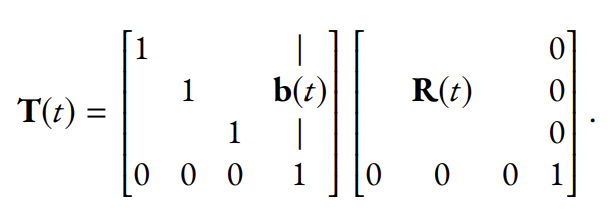
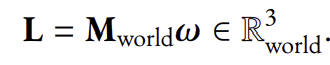
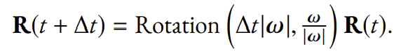
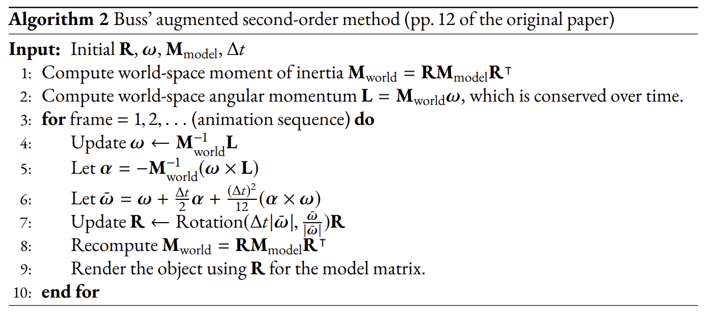
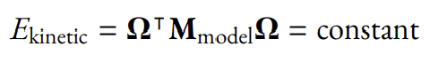
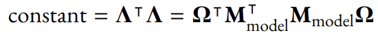
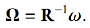

In this project topic, we produce a physics-based animation. Specifically, we simulate rigid
body motion in 3D.
In terms of affine transformations we learned in the course of our test, it is easy to describe what happens for a rigid body. As a standard description, there is a model coordinate where the vertex
position (and other attributes) of the geometric object are defined. Then,
there is a model matrix T ∈ R4x4, that sends the positions in the model
coordinate to the positions in the world coordinate:
For a rigid body motion, it is T that changes over time, constituting an animation of object moving in the world. The vertex positions defined under the model coordinate remain static; they are stored in some vertex buers initially and never require any update. Moreover, for arigid body, the time-dependent model matrix always takes the form of “first a rotation about the center of mass, followed by a translation”:

A fundamental assumption of rigid body motion is that the moment of
inertia depends only on the shape of the geometry, which is
completely static when we are in the model coordinate, which means
it is time-independent. But is defined as Mworld = RMmodelR-1 in
the world coordinate.
A common practice is to set the model coordinate to align with the eigenvectors of
Mmodel so that we can simply assume the Mmodel would be:
The angular momentum of the system is given by the following vector in the world coordinate:
What describes the rotation motion is the change in R(t) over time. Such a change is described by a vector ω ∈ R world (in the world coordinate) called the angular velocity. The length of this vector |ω| is the rotation speed, and the direction ω/|ω| is the rotation axis. Put it simply, when an object has an angular velocity ω, after a short amount of time ∆t, the new orientation R(t+∆t) will be further rotated by the angular velocity.
In a rigid body motion, we have conservation of energy and conservation of angular momentum. More precisely,
A simple algorithm directly based on conservation of angular momentum, we used an improvement method that was introduced in UCSD by Sam Buss in 2001. After running the animation for a longer time this method works well for small ∆t.
The two conservation laws (energy and angular momentum) can be visualized by Poinsot's ellipsoids. The conservation of energy says that
As for conservation of angular momentum, we have L being constant in the world coordinate. In the model coordinate, Λ(t) is not constant. But the |Λ(t)| = |L| will be constant.Recall Λ(t) = MmodelΩ(t). So,
To visually verify that our algorithm is doing the correct thing, we render the position Ω and see if it lies on the intersection of both ellipsoids in the model coordinate.We can also transform both ellipsoid in the world and see if ω lies on the intersection of the transformed ellipsoids.The intersection of the two ellipsoids is called the polhode.
The vector ω ∈ R world describes how fast the orientation is modified over time. ω is analogous to velocity. Sometimes we will also look at ω in the model coordinate, which is given by a straightforward transformation "omega".
To visually verify that our algorithm is doing the correct thing, we render the position Ω (shown by the black moving dot), in order to see if it lies on the intersection of both ellipsoids in the model coordinate.We can also transform both ellipsoid in the world and see if ω lies on the intersection of the transformed ellipsoids.The intersection of the two ellipsoids is called the polhode.